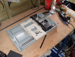
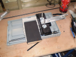
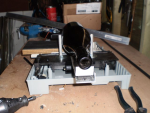
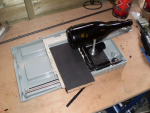
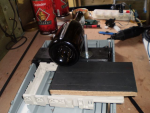

Since a year I have be brewing my own beer at home. And till now I put my beer in some anonymous bottles, mostly old champagne bottles.
So I wanted some kind of etiquette for my bottles. Tried some print stuff, printer stuff, hand made stuff. Nothing was what I wanted.
One day I got this wonderfull idea. I wanted to make a machine that would etch the bottles. I have some experience with Arduino, know how to program in PHP and have a small knowledge of electronics. So putting all this together could result in such a plotter machine. Somewhere along the road the idea changed to drawing something on the bottle instead of etching it.
The whole contruction of the Beer Bottle Plotter is very simple. I used
The Arduino is simple to program for anyone with a little programming experience. There are libraries available for the stepper motors and for the servo and tons of example on the Arduino site.
Sending commands to the Arduino from PHP was some more trouble. I got this working by using SerProxy together with PHP and by putting a 47 ohm resistor between the 3v and the reset entry of the Arduino to prevent it from resetting with every command I send. More info can be found on this forum.
Next problem was to define what to draw. I solved this by modifying some Processing scripts that will make a file with the movements of my mouse. PHP reads this file, calculates the changes and the directions and sends it to the Arduino over the SerProxy. The only thing the Arduino has to do is capture the command and give the different motors the right commands to turn.
I'll put links to all the source files I used when the whole thing works the way it should (till now it print the whole thing mirrored ;-)
Feel free to send me any comment or questions info@noisejunk.eu and please visit the rest of the site
If you want to see what it should have looked like see the Processing applet




